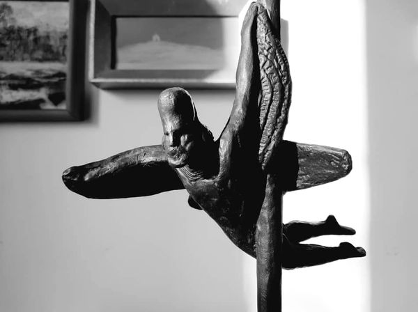

{% extends 'main/base.html' %}
{% block title %}
about
{% endblock %}
{% block content %}

"Гран при Международного кинофестиваля "Восток - Запад" в Баку за документальный фильм "Бежала собака."
Сценарий назывался "Собаки видят черно белым" и эти четыре слова, как первая строка в Евангелие от Иоанна "В начале было Слово...", стали сутью изобразительной стилистики и идеи нашего кино-дебюта.
Приступая к съёмкам, мы осознанно понимали, что будем снимать на чёрно-белую плёнку с последующий печатью на цветной позитив. Это давало возможность вирирования, как в классической галогеносеребряной фотографии, изображения в холодные или тёплые тона. К тому же, задумывали вкрапливать в структуру повествования цветные эпизоды: сняли Тайгана (кыргызская борзая и так звали героиню), кормящую щенков, финальные кадры, когда живодеры снимают шкуры с отстреленных собак и сжигают трупы - таким образом намеревались усилить чувство сопереживания. Черно-белую плёнку обрабатывали здесь, у себя на "Кыргызфильме", это давало возможность оперативно отсматривать отснятый материал, что было архи важно для начинающих. Цветную плёнку отправляли на проявку в Ленинград, после монтажа и перезаписи, там же печатали копию.
Ракурс камеры на уровне Тайгана: как бы история её глазами и многие сцены приходилось снимать с рук. Порой, как в эпизоде, когда героиня ищет щенков на собачьем рынке, мы низко держали камеру и снимали широким объективом не смотря в визир, полностью положившись на чутье оператора. А одна из известных сцен, о которой многие спрашивают, как вы так умудрялись снимать, погоня живодеров за Тайганом: мы сажали оператора с камерой на санки и "катали" его среди гаражей.
Зима, тоже обдуманное решение, снег, подобно бумаге для рисунка черной сажевой тушью. Прошло ровно тридцать лет, как вышла в свет картина "Бежала собака. "Визуальный образ - предопределение замысла, стало моим кредо и многие последующие фильмы построены по принципу "собаки видят черно белым".
{% endblock %}